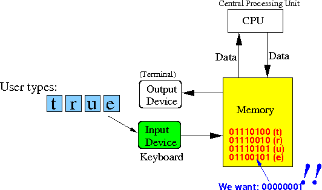

- Recall that:
- The Boolean value false is represented by the binary number 00000000
- The Boolean value
true is
represented by the
binary number 00000001
(See: click here )
- Boolean inputs are
entered into the
computer input by
typing the
text:
true or: falseProblem:
- When you type in the text
true
the computer will receive these ASCII codes:
01110100 01110010 01110101 01100101 which represents: t r u eThe computer will not receive the Boolean representation 00000001 for true !!!
- See it for yourself:
- Enter the text "true" or "false":
- See the corresponding binary ASCII codes for the string:
- Enter the text "true" or "false":
- When you type in the text
- In other words:
- Human users will
enter the boolean value
"true"
as a
string
(i.e.: as the ASCII codes
for the letters
t,
r,
u and
e)
- But internally (= inside a Java program, the boolean value true is represented by the binary number 00000001
 Therefore: we need to convert the input (ASCII) representation to the internal boolean representation
- Human users will
enter the boolean value
"true"
as a
string
(i.e.: as the ASCII codes
for the letters
t,
r,
u and
e)
- The Java class Boolean provides
parseBoolean( ) method to
convert
an "ASCII" representation of
the boolean values to
the internal "program" representation of
the boolean values:
boolean parseBoolean( String s ): return a boolean value translated from the input string s If s == "true", function returns true (= 1) If s == "false", function returns false (= 0)See: click here
-
The method parseBoolean( )
performs the following
translation:
Input Output -------- ------------- "true" ---> 00000001 "false" ---> 00000000 Note: "true" means: the ASCII codes 01110100 01110010 01110101 01100101 "false" maens: the ASCII codes 01100110 01100001 01101100 01110011 01100101Example:
boolean x; String input = in.nextLine(); // Read in a string ("true" or "false") x = Boolean.parseBoolean(input); if ( x ) { System.out.println("You have entered the `true' boolean value"); } else { System.out.println("You have entered the `false' boolean value"); }
- Example Program:
(Demo above code)

- Prog file: /home/cs255001/demo/java/String2Bool.java
How to run the program:
- To compile: javac String2Bool.java
- To run: java String2Bool
- The parseBoolean( )
method is very simple and
I like to use it to
show you a
simple example of
conversion from
String to
boolean representation.
The parseBoolean( ) method is just one if-statement that check for the string "true":
public static boolean parseBoolean( String s ) { if ( s.equals("true") ) return true; // returns true, which is the same as the bin number 1 else return false; // returns false, which is the same as the bin number 0 }Note:
- The expression s.equals("true") will test if the string s contains the 4 ASCII codes that represents the letters 't' 'r' 'u' 'e' !!!
- To try it out,
edit the
BooleanDemo.java program
and
make this change:
x = BooleanIO.parseBoolean(input);
- Example Program:
(Demo above code)
- Prog file:
/home/cs255001/demo/java/BooleanDemo.java
Change to Boolean class to BooleanIO
How to run the program:
- To compile: javac BooleanDemo.java
- To run: java BooleanDemo
- Prog file:
/home/cs255001/demo/java/BooleanDemo.java